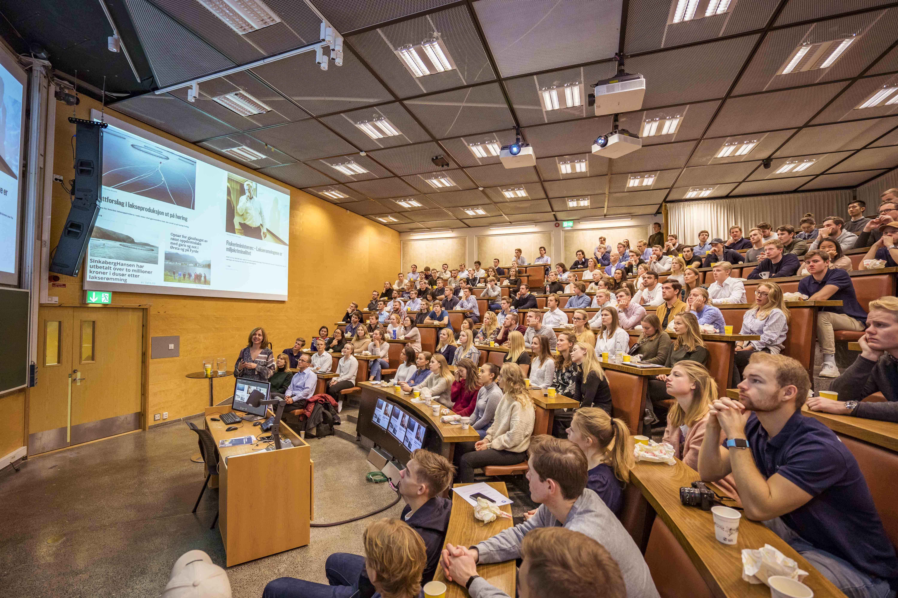

Bedriftsdagen gir studenter ved Marin teknikk den ypperste mulighet til å komme i kontakt med det maritime næringslivet. Man vil få et innblikk i hvordan næringen og forskjellige bedrifter er bygd opp ved speedpresentasjoner samt mulighet til å snakke med bedriftene på tomannshånd. Dette er en særegen mulighet for å komme til et forum med flere relevante bedrifter med dere studenter i sentrum. Bedriftene oppsøker oss for å vekke oppmerksomhet om mulighetene i de respektive bedriftene, og om sommerjobber, faste ansettelser eller masteroppgave. Det kan derfor være lurt å ha med seg CV og en åpen søknad på bedriftsdagen. Her kan man finne sin fremtidige arbeidsgiver!
Se programmet her.